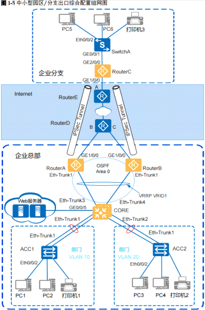

中小型园区/分支出口综合配置示例

方案介绍
•
在网络的接入层部署华为S2700交换机（ACC1、ACC2、SwitchA），在网络的核心部署华为S5700交换机（CORE），在园区出口部署华为AR3200路由器（RouterA、RouterB、RouterC）。
• 总部采用双AR出口冗余备份方式，保证设备级的可靠性。分支部署一台AR路由器做出口。
• 总部核心交换机采用两台S5700交换机做堆叠，保证设备级的可靠性。
•
总部接入交换机与核心交换机之间以及核心交换机与出口路由器之间采用EthTrunk方式组网，保证链路级的可靠性。
•
总部每个部门业务划分到一个VLAN中，部门间的业务在核心交换机CORE上通过VLANIF三层互通。
• 总部核心交换机作为用户及服务器网关，部署DHCP Server为用户分配IP地址。
•
分支用户的网关直接部署在出口路由器上。总部两个出口路由器之间部署VRRP，保证可靠性。
• 总部和分支之间通过Internet构建IPSec
VPN进行私网互通，同时保证数据传输的安全性。
•
总部两台出口路由器和核心交换机之间部署OSPF，用于发布用户路由，便于后期扩容及维护。
配置思路
采用如下思路部署中小型园区/分支出口综合配置举例：
- 部署总部及分支园区内网总部：部署堆叠、链路聚合，配置各VLAN及IP地址、部署DHCP Server，实现园区内网互通。部门内部通过接入层交换机进行二层互通，部门间通过核心交换机CORE上的VLANIF进行三层互通。分支：配置接入层交换机及出口路由器的各接口VLAN及IP地址，部署DHCPServer，实现分支园区内网互通。
2. 部署VRRP为了保证总部核心交换机与两个出口路由器之间的可靠性，在两个出口路由器之间部署VRRP，VRRP的心跳报文经过核心交换机进行交互。RouterA为Master设备，RouterB为Backup设备。为了防止总部RouterA上行链路故障的时候业务断流，将VRRP状态与RouterA的上行口进行联动，保证上行链路故障时VRRP进行快速倒换。
3.
部署路由为了引导各设备的上行流量，在总部核心交换机上配置一条缺省路由，下一跳指向VRRP的虚地址，在总部及分支的出口路由器上各配置一条缺省路由，下一跳指向运营商网络设备的对接地址（公网网关）。
为了引导总部两个出口路由器的回程流量，在两个出口路由器和核心交换机之间部署OSPF，核心交换机上将所有用户网段发布到OSPF里面，通告给两个出口路由器。
为了引导外网用户访问Web服务器的流量，需要在总部的运营商路由器上配置两条目的地址为服务器公网地址的静态路由，下一跳分别指向两个出口路由器的上行口IP地址。并且为了保证路由和VRRP同步切换，设置下一跳为RouterA的这条路由优先，当这条路由失效的时候下一跳指向RouterB的路由生效。
部署NAT Outbound为了使内网用户访问Internet，在两台出口路由器的上行口配置NAT，实现私网地址和公网地址之间的转换。通过ACL匹配A部门的源IP地址，从而实现A部门的用户可以访问Internet，而B部门的用户不能访问Internet。
NAT Server为了实现外网用户访问内网Web服务器，在两个出口路由器的上行口上配置NATServer，实现服务器公网地址和私网地址之间的映射。
部署IPSec VPN为了实现总部和分支之间进行私网VPN互通，在总部出口路由器和分支出口路由器之间部署IPSec VPN，通过Internet构建IPSec VPN，实现总部和分支之间的安全通信。